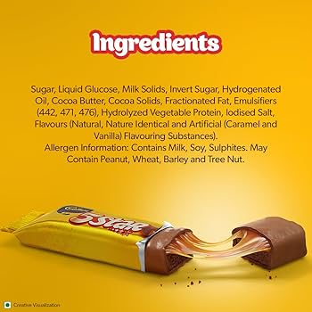
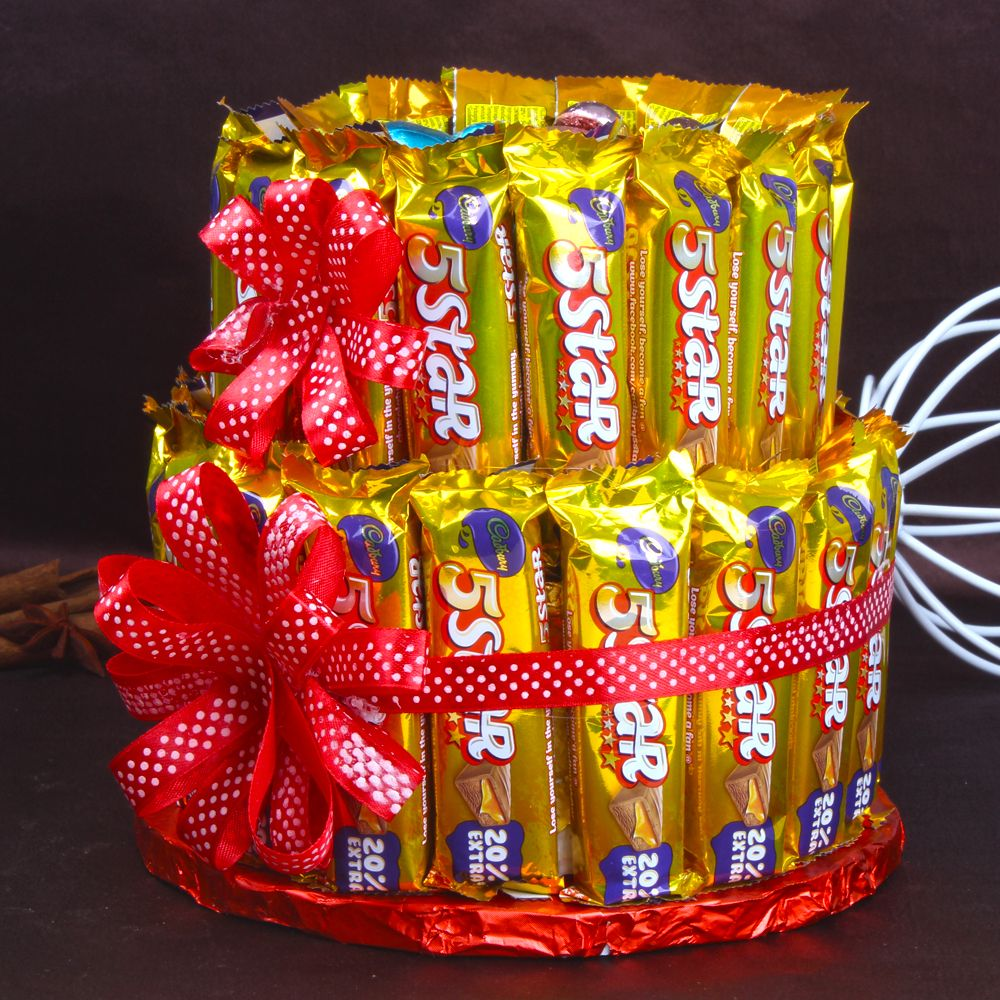
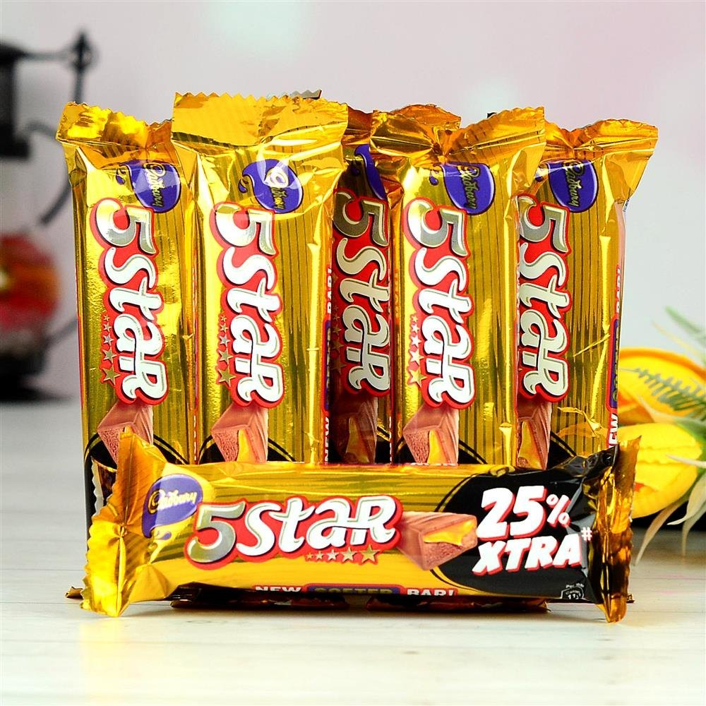
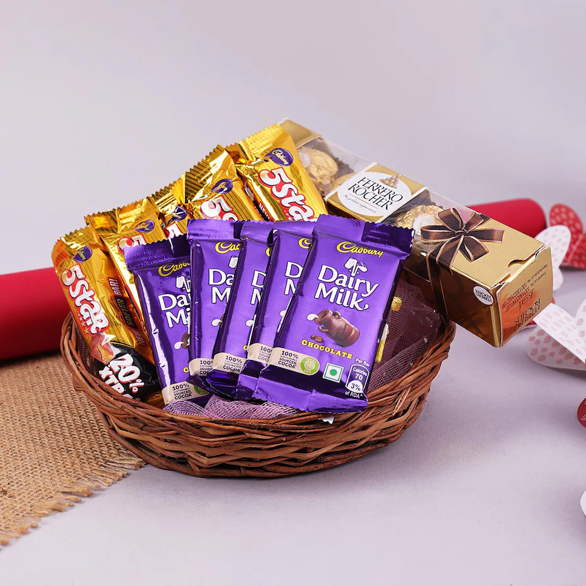

Five-Star Business Finance Limited is a prominent, Chennai-based Non-Banking Financial Company (NBFC) specializing in providing secured loans to micro-entrepreneurs and self-employed individuals, often working in the informal economy. Founded in 1984, the company focuses on the "un-banked" segment, offering financing for small businesses, home renovations, and personal needs such as education and healthcare. With a strong presence in South India and over 500 branches, Five Star operates on a model that evaluates the customer's cash flow, character, and collateral, typically securing loans against residential property. Under the leadership of D. Lakshmipathy, the company has grown significantly to become a publicly listed entity, backed by reputable investors like Sequoia Capital, KKR, and Matrix Partners. Known for its high return on assets and disciplined asset quality, Five Star aims to provide responsible credit to those who are often overlooked by traditional banking institutions
Under the leadership of D. Lakshmipathy, the company has grown significantly to become a publicly listed entity, backed by reputable investors like Sequoia Capital, KKR, and Matrix Partners. Known for its high return on assets and disciplined asset quality, Five Star aims to provide responsible credit to those who are often overlooked by traditional banking institutions
Launched by Cadbury (Mondelez International) in 1969, 5 Star has established itself as a premier chocolate brand.

Market leader in the count-line segment with multiple variants like 5 Star Crunchy and Fruit & Nut.
Wide distribution network reaching shops, supermarkets, and platforms like Amazon and Flipkart.

5 Star ensures widespread availability through an extensive 3-level distribution network that reaches small kirana shops, supermarkets, and digital platforms like Amazon and Flipkart.

As a market leader in the count-line segment, the company focuses on providing an accessible luxury, with products ranging from the classic 5 Star bar to specialized variants like 5 Star Crunchy, Fruit & Nut, and 5 Star 3D

5 Star ensures widespread availability through an extensive 3-level distribution network that reaches small kirana shops, supermarkets, and digital platforms like Amazon and Flipkart.
5 Star ensures widespread availability through an extensive 3-level distribution network that reaches small kirana shops, supermarkets, and digital platforms like Amazon and Flipkart.